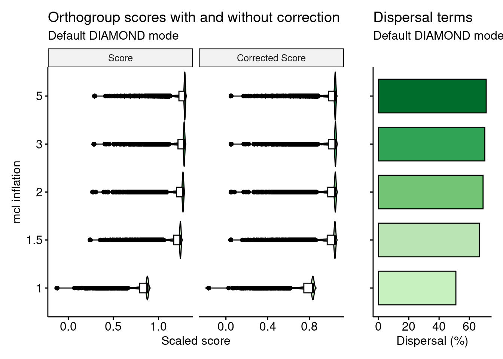

set.seed(123) # for reproducibility
library(here)
library(cogeqc)
library(ggpubr)
library(rstatix)
library(patchwork)
library(tidyverse)
source(here("code", "utils.R"))5 On overclustering correction
Here, we will verify whether the dispersal term of the orthogroup scores really penalizes overclustering. For that, we ran OrthoFinder (Emms and Kelly 2019) one more time using the previously described Brassicaceae data set, but now with an Markov inflation parameter (mcl) of 5. An mcl of 5 is usually considered too large, so we would expect orthogroup scores to be lower than, for instance, runs with mcl = 3. Our goal here is to verify if our hypothesis is true.
Loading required packages:
5.1 Data acquisition
We ran OrthoFinder with the following code:
# Run OrthoFinder - default DIAMOND mode, mcl = 5
orthofinder -f data -S diamond -I 5 -o products/result_files/default_5 -ogNow, we will load our data to the R session as a list of cogeqc-friendly orthogroup data frames.
# Extract tar.xz file
tarfile <- here("products", "result_files", "Orthogroups.tar.xz")
outdir <- tempdir()
system2("tar", args = c("-xf", tarfile, "--directory", outdir))
# Get path to OrthoFinder output
og_files <- list.files(
path = outdir,
pattern = "Orthogroups.*", full.names = TRUE
)
# Remove files for the ultrasensitive DIAMOND mode and add mcl=5
og_files <- c(
og_files[c(2, 1, 3, 4)],
here("products", "result_files", "Orthogroups_default_5.tsv.gz")
)
# Read and parse files
ogs <- lapply(og_files, function(x) {
og <- read_orthogroups(x)
og <- og %>%
mutate(Species = stringr::str_replace_all(Species, "\\.", "")) %>%
mutate(Gene = str_replace_all(
Gene, c(
"\\.[0-9]$" = "",
"\\.[0-9]\\.p$" = "",
"\\.t[0-9]$" = "",
"\\.g$" = ""
)
))
return(og)
})
names(ogs) <- c("1", "1.5", "2", "3", "5")Next, we will load InterPro annotation from PLAZA 5.0 (Van Bel et al. 2022).
# Define function to read functional annotation from PLAZA 5.0
read_annotation <- function(url, cols = c(1, 3)) {
annot <- readr::read_tsv(url, show_col_types = FALSE, skip = 8) %>%
select(cols)
names(annot)[1:2] <- c("Gene", "Annotation")
return(annot)
}
# Get Interpro annotation
base <- "https://ftp.psb.ugent.be/pub/plaza/plaza_public_dicots_05/InterPro/"
interpro <- list(
Athaliana = read_annotation(paste0(base, "interpro.ath.csv.gz")),
Aarabicum = read_annotation(paste0(base, "interpro.aar.csv.gz")),
Alyrata_cvMN47 = read_annotation(paste0(base, "interpro.aly.csv.gz")),
Bcarinata_cvzd1 = read_annotation(paste0(base, "interpro.bca.csv.gz")),
Crubella_cvMonteGargano = read_annotation(paste0(base, "interpro.cru.csv.gz")),
Chirsuta = read_annotation(paste0(base, "interpro.chi.csv.gz")),
Sparvula = read_annotation(paste0(base, "interpro.spa.csv.gz"))
)
interpro <- lapply(interpro, as.data.frame)5.2 Validating the overclustering correction
Now that we have all data we need (orthogroup data frames and domain annotations), let’s calculate orthogroup scores. Here, we will use the function calculate_H_with_terms() from the file utils.R, which contains a slightly modified version of the function calculate_H() from cogeqc, but instead of updating the uncorrected scores with the corrected scores, it returns the dispersal terms and corrected scores and separate variables.
# Calculate orthogroup scores with and without correction for overclustering
og_homogeneity <- Reduce(rbind, lapply(seq_along(ogs), function(x) {
mode <- names(ogs)[x]
annotation <- Reduce(rbind, interpro) |> distinct()
message("Working on ", mode)
orthogroup_df <- merge(
ogs[[x]],
annotation,
all.x = TRUE
)
scores_df <- calculate_H_with_terms(
orthogroup_df, correct_overclustering = TRUE, update_score = FALSE
)
scores_df$Mode <- mode
return(scores_df)
}))
og_homogeneity$Mode <- factor(
og_homogeneity$Mode, levels = unique(og_homogeneity$Mode)
)Next, let’s visualize orthogroup scores with and without corrections, as well as look at the dispersal terms for each mode.
# Plot scores
p_scores <- og_homogeneity |>
mutate(
Score = (Score - min(Score) / (max(Score) - min(Score))),
Score_c = (Score_c - min(Score_c) / (max(Score_c) - min(Score_c)))
) |>
dplyr::select(Orthogroup, Score, `Corrected Score` = Score_c, Mode) |>
pivot_longer(
!c("Orthogroup", "Mode"),
names_to = "Measure",
values_to = "Score"
) |>
mutate(
Measure = factor(Measure, levels = c("Score", "Corrected Score"))
) |>
ggpubr::ggviolin(
x = "Mode", y = "Score",
orientation = "horiz",
fill = "Mode",
palette = rev(c("#006D2C", "#31A354", "#74C476", "#BAE4B3", "#c7f2bf")),
add = "boxplot", add.params = list(fill = "white")
) +
labs(
x = "mcl inflation", y = "Scaled score",
title = "Orthogroup scores with and without correction",
subtitle = "Default DIAMOND mode"
) +
facet_wrap(~Measure, scales = "free_x", nrow = 1) +
theme(legend.position = "none")
# Plot dispersal terms
p_dispersal <- og_homogeneity |>
dplyr::select(Mode, Dispersal) |>
mutate(Dispersal = Dispersal * 100) |>
dplyr::distinct() |>
ggpubr::ggbarplot(
x = "Mode", y = "Dispersal", stat = "identity",
orientation = "horiz",
fill = "Mode",
palette = rev(c("#006D2C", "#31A354", "#74C476", "#BAE4B3", "#c7f2bf")),
) +
labs(
x = "", y = "Dispersal (%)",
title = "Dispersal terms",
subtitle = "Default DIAMOND mode"
) +
theme(
legend.position = "none",
axis.text.y = element_blank()
)
# Combine plots
p_combined <- patchwork::wrap_plots(p_scores, p_dispersal, widths = c(2.5, 1))
p_combined
We can see that, without correction (homogeneity only), increasing the value for the mcl parameter leads to increasingly larger scores. However, as homogeneity increases, the dispersal also increases. After correcting for dispersal, larger values for the mcl parameter do not lead to higher orthogroup scores.
To verify that formally, let’s perform a Mann-Whitney U test for differences in orthogroup scores for runs with mcl of 3 and 5 with and without correcting for dispersal.
# Without dispersal
compare(og_homogeneity, "Score ~ Mode") |>
filter(group1 == "3" & group2 == "5") group1 group2 n1 n2 padj_greater padj_less padj_interpretation
1 3 5 23849 25595 1 0 less
effsize magnitude
1 0.3913194 moderate# With dispersal
compare(og_homogeneity, "Score_c ~ Mode") |>
filter(group1 == "3" & group2 == "5") group1 group2 n1 n2 padj_greater padj_less padj_interpretation
1 3 5 23849 25595 0 1 greater
effsize magnitude
1 0.3591549 moderateAs expected, without correcting for dispersal, using mcl = 5 leads to better orthogroup scores than using mcl = 3. However, after correction, orthogroup scores for mcl = 5 are worse than scores for mcl = 3, which is desired.
Session info
This document was created under the following conditions:
─ Session info ───────────────────────────────────────────────────────────────
setting value
version R version 4.3.0 (2023-04-21)
os Ubuntu 20.04.5 LTS
system x86_64, linux-gnu
ui X11
language (EN)
collate en_US.UTF-8
ctype en_US.UTF-8
tz Europe/Brussels
date 2023-10-06
pandoc 3.1.1 @ /usr/lib/rstudio/resources/app/bin/quarto/bin/tools/ (via rmarkdown)
─ Packages ───────────────────────────────────────────────────────────────────
package * version date (UTC) lib source
abind 1.4-5 2016-07-21 [1] CRAN (R 4.3.0)
ape 5.7-1 2023-03-13 [1] CRAN (R 4.3.0)
aplot 0.1.10 2023-03-08 [1] CRAN (R 4.3.0)
backports 1.4.1 2021-12-13 [1] CRAN (R 4.3.0)
beeswarm 0.4.0 2021-06-01 [1] CRAN (R 4.3.0)
BiocGenerics 0.46.0 2023-04-25 [1] Bioconductor
Biostrings 2.68.0 2023-04-25 [1] Bioconductor
bitops 1.0-7 2021-04-24 [1] CRAN (R 4.3.0)
broom 1.0.4 2023-03-11 [1] CRAN (R 4.3.0)
car 3.1-2 2023-03-30 [1] CRAN (R 4.3.0)
carData 3.0-5 2022-01-06 [1] CRAN (R 4.3.0)
cli 3.6.1 2023-03-23 [1] CRAN (R 4.3.0)
codetools 0.2-19 2023-02-01 [4] CRAN (R 4.2.2)
cogeqc * 1.4.0 2023-04-25 [1] Bioconductor
coin 1.4-2 2021-10-08 [1] CRAN (R 4.3.0)
colorspace 2.1-0 2023-01-23 [1] CRAN (R 4.3.0)
crayon 1.5.2 2022-09-29 [1] CRAN (R 4.3.0)
digest 0.6.33 2023-07-07 [1] CRAN (R 4.3.0)
dplyr * 1.1.2 2023-04-20 [1] CRAN (R 4.3.0)
evaluate 0.21 2023-05-05 [1] CRAN (R 4.3.0)
fansi 1.0.4 2023-01-22 [1] CRAN (R 4.3.0)
farver 2.1.1 2022-07-06 [1] CRAN (R 4.3.0)
fastmap 1.1.1 2023-02-24 [1] CRAN (R 4.3.0)
forcats * 1.0.0 2023-01-29 [1] CRAN (R 4.3.0)
generics 0.1.3 2022-07-05 [1] CRAN (R 4.3.0)
GenomeInfoDb 1.36.0 2023-04-25 [1] Bioconductor
GenomeInfoDbData 1.2.10 2023-04-28 [1] Bioconductor
ggbeeswarm 0.7.2 2023-04-29 [1] CRAN (R 4.3.0)
ggfun 0.0.9 2022-11-21 [1] CRAN (R 4.3.0)
ggplot2 * 3.4.1 2023-02-10 [1] CRAN (R 4.3.0)
ggplotify 0.1.0 2021-09-02 [1] CRAN (R 4.3.0)
ggpubr * 0.6.0 2023-02-10 [1] CRAN (R 4.3.0)
ggsignif 0.6.4 2022-10-13 [1] CRAN (R 4.3.0)
ggtree 3.8.0 2023-04-25 [1] Bioconductor
glue 1.6.2 2022-02-24 [1] CRAN (R 4.3.0)
gridGraphics 0.5-1 2020-12-13 [1] CRAN (R 4.3.0)
gtable 0.3.3 2023-03-21 [1] CRAN (R 4.3.0)
here * 1.0.1 2020-12-13 [1] CRAN (R 4.3.0)
hms 1.1.3 2023-03-21 [1] CRAN (R 4.3.0)
htmltools 0.5.5 2023-03-23 [1] CRAN (R 4.3.0)
htmlwidgets 1.6.2 2023-03-17 [1] CRAN (R 4.3.0)
igraph 1.4.2 2023-04-07 [1] CRAN (R 4.3.0)
IRanges 2.34.0 2023-04-25 [1] Bioconductor
jsonlite 1.8.7 2023-06-29 [1] CRAN (R 4.3.0)
knitr 1.43 2023-05-25 [1] CRAN (R 4.3.0)
labeling 0.4.2 2020-10-20 [1] CRAN (R 4.3.0)
lattice 0.20-45 2021-09-22 [4] CRAN (R 4.2.0)
lazyeval 0.2.2 2019-03-15 [1] CRAN (R 4.3.0)
libcoin 1.0-9 2021-09-27 [1] CRAN (R 4.3.0)
lifecycle 1.0.3 2022-10-07 [1] CRAN (R 4.3.0)
lubridate * 1.9.2 2023-02-10 [1] CRAN (R 4.3.0)
magrittr 2.0.3 2022-03-30 [1] CRAN (R 4.3.0)
MASS 7.3-58.2 2023-01-23 [4] CRAN (R 4.2.2)
Matrix 1.5-1 2022-09-13 [4] CRAN (R 4.2.1)
matrixStats 1.0.0 2023-06-02 [1] CRAN (R 4.3.0)
modeltools 0.2-23 2020-03-05 [1] CRAN (R 4.3.0)
multcomp 1.4-25 2023-06-20 [1] CRAN (R 4.3.0)
munsell 0.5.0 2018-06-12 [1] CRAN (R 4.3.0)
mvtnorm 1.1-3 2021-10-08 [1] CRAN (R 4.3.0)
nlme 3.1-162 2023-01-31 [4] CRAN (R 4.2.2)
patchwork * 1.1.2 2022-08-19 [1] CRAN (R 4.3.0)
pillar 1.9.0 2023-03-22 [1] CRAN (R 4.3.0)
pkgconfig 2.0.3 2019-09-22 [1] CRAN (R 4.3.0)
plyr 1.8.8 2022-11-11 [1] CRAN (R 4.3.0)
purrr * 1.0.1 2023-01-10 [1] CRAN (R 4.3.0)
R6 2.5.1 2021-08-19 [1] CRAN (R 4.3.0)
Rcpp 1.0.10 2023-01-22 [1] CRAN (R 4.3.0)
RCurl 1.98-1.12 2023-03-27 [1] CRAN (R 4.3.0)
readr * 2.1.4 2023-02-10 [1] CRAN (R 4.3.0)
reshape2 1.4.4 2020-04-09 [1] CRAN (R 4.3.0)
rlang 1.1.1 2023-04-28 [1] CRAN (R 4.3.0)
rmarkdown 2.23 2023-07-01 [1] CRAN (R 4.3.0)
rprojroot 2.0.3 2022-04-02 [1] CRAN (R 4.3.0)
rstatix * 0.7.2 2023-02-01 [1] CRAN (R 4.3.0)
rstudioapi 0.14 2022-08-22 [1] CRAN (R 4.3.0)
S4Vectors 0.38.0 2023-04-25 [1] Bioconductor
sandwich 3.0-2 2022-06-15 [1] CRAN (R 4.3.0)
scales 1.2.1 2022-08-20 [1] CRAN (R 4.3.0)
sessioninfo 1.2.2 2021-12-06 [1] CRAN (R 4.3.0)
stringi 1.7.12 2023-01-11 [1] CRAN (R 4.3.0)
stringr * 1.5.0 2022-12-02 [1] CRAN (R 4.3.0)
survival 3.5-3 2023-02-12 [4] CRAN (R 4.2.2)
TH.data 1.1-2 2023-04-17 [1] CRAN (R 4.3.0)
tibble * 3.2.1 2023-03-20 [1] CRAN (R 4.3.0)
tidyr * 1.3.0 2023-01-24 [1] CRAN (R 4.3.0)
tidyselect 1.2.0 2022-10-10 [1] CRAN (R 4.3.0)
tidytree 0.4.2 2022-12-18 [1] CRAN (R 4.3.0)
tidyverse * 2.0.0 2023-02-22 [1] CRAN (R 4.3.0)
timechange 0.2.0 2023-01-11 [1] CRAN (R 4.3.0)
treeio 1.24.1 2023-05-31 [1] Bioconductor
tzdb 0.3.0 2022-03-28 [1] CRAN (R 4.3.0)
utf8 1.2.3 2023-01-31 [1] CRAN (R 4.3.0)
vctrs 0.6.3 2023-06-14 [1] CRAN (R 4.3.0)
vipor 0.4.5 2017-03-22 [1] CRAN (R 4.3.0)
withr 2.5.0 2022-03-03 [1] CRAN (R 4.3.0)
xfun 0.39 2023-04-20 [1] CRAN (R 4.3.0)
XVector 0.40.0 2023-04-25 [1] Bioconductor
yaml 2.3.7 2023-01-23 [1] CRAN (R 4.3.0)
yulab.utils 0.0.6 2022-12-20 [1] CRAN (R 4.3.0)
zlibbioc 1.46.0 2023-04-25 [1] Bioconductor
zoo 1.8-12 2023-04-13 [1] CRAN (R 4.3.0)
[1] /home/faalm/R/x86_64-pc-linux-gnu-library/4.3
[2] /usr/local/lib/R/site-library
[3] /usr/lib/R/site-library
[4] /usr/lib/R/library
──────────────────────────────────────────────────────────────────────────────References
Emms, David M, and Steven Kelly. 2019. “OrthoFinder: Phylogenetic Orthology Inference for Comparative Genomics.” Genome Biology 20 (1): 1–14.
Van Bel, Michiel, Francesca Silvestri, Eric M Weitz, Lukasz Kreft, Alexander Botzki, Frederik Coppens, and Klaas Vandepoele. 2022. “PLAZA 5.0: Extending the Scope and Power of Comparative and Functional Genomics in Plants.” Nucleic Acids Research 50 (D1): D1468–74.